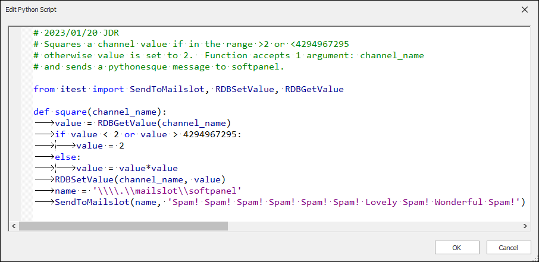
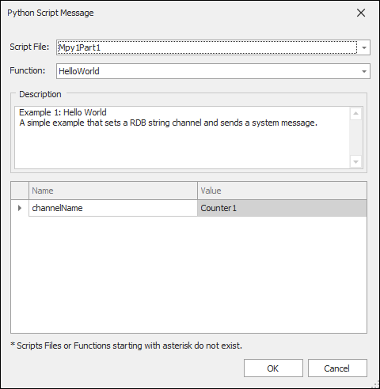

iTest User's Guide
Python scripts can be executed and edited in AutomationPanel. These scripts can be created in Test Manager or SolutionBuilder. For more information, refer to the following documents:
To edit a python script in AutomationPanel, do the following:
$EXECUTE;SolutionBuilder.exe $SUPPORTDIR\PythonScripts\%<FileName>%, where <FileName> is the name of the python script.PythonScriptExcludeFilter powertek.ini setting; refer to the iTest INI Options documentation for more information. If this setting is present, then the Select Python Script dialog will be limited to list only the scripts that do not match the filter setting.Python scripts can be quickly added and executed through the use of buttons by configuring the Python Script and the Message Off/On properties. These properties can be edited through the button panel's Property Manager.
The Python Script property allows you to open the Edit Python Script dialog, where you can create and modify Python scripts, as needed. After configuration, the Python script will be executed once the button transitions to the ON state.
Edit Python Script Dialog

The Message Off/On properties allow you to set Python script arguments via the Python Script Message dialog; this dialog is only available if the Message Type property is set to Python Script. For more information, refer to the table below.
 |
WARNING: | PythonEngine only supports up to 10 arguments; however, the Python Script Message dialog may list more arguments than this limit. |
Python Script Message Dialog

Python Script Message Field Descriptions
| Field | Description |
| Script File | A drop-down list of script files available in the $SYSTEMDIR and $SUPPORTDIR. If a script with the same name exists in both folders, then the script from the $SUPPORTDIR will be used. |
| Function | A drop-down list of available Python functions found in the selected script file. |
| Description | The commented lines (i.e., lines that start with the pound sign) provided from the selected script file. |
| Argument Grid | A list of available arguments provided from the selected Python function. If the selected function does not have any arguments, then this grid will be empty and read-only. Each argument will display in the Name column, and the argument's value can be set via the Value column. |